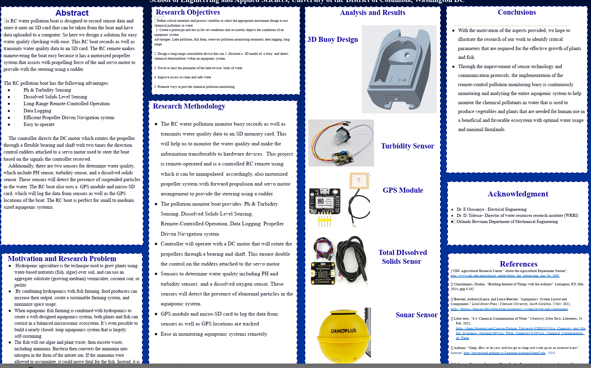
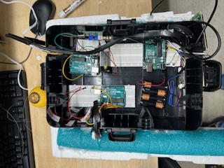
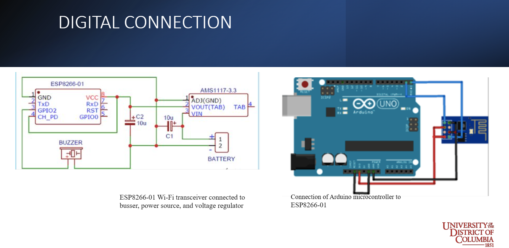
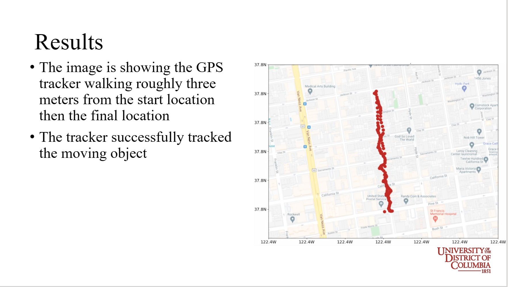

Here lays the schematic design for the IoT buoy I collaborated on
(students of the University of the District of Columbia), for the
purpose of hydroponic farming environment monitoring.
These seniors incorporated my expertise in hardwiring and testing out
the circuitry for the system being built. Using an Arduino, we were able
to incorporate a number of different technologies onto this submersible
device that would feature many capabilities!
As more time passes, more use cases can be developed from this research
for autonomous monitoring, as well as water treatment monitoring with a
manned unit, thus limiting contamination of drinkable water sources.
Here were some of our discoveries and outcomes of the project from the
2023 year.




